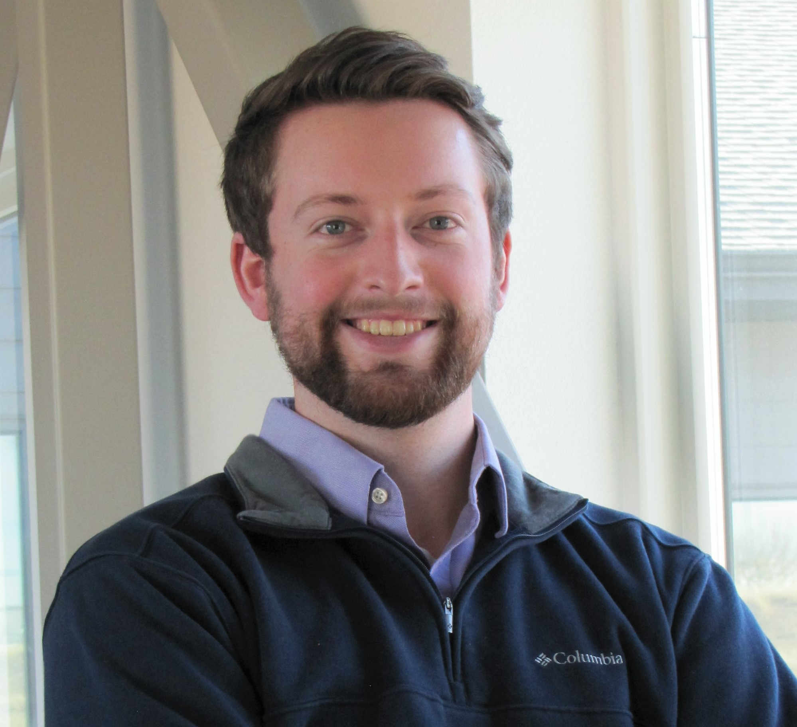

v1.0.0


About me

My name is Austen Harrell. I've lived in Montana since 2010, and I've resided in Bozeman (mostly) since first attending Montana State University in 2016. I graduated in 2020 with a B.S. in mechanical engineering, which ultimately led me to the power delivery industry in early 2021. I currently work for Ulteig Engineering, Inc. as a design engineer while working towards my B.S. in computer science back at MSU.
In my free time, I try to enjoy the outdoors as much as possible. Montana makes it easy to get away for fishing, camping, hiking, and dirtbiking. I also enjoy playing learning new programming skills and languages, reading, board games, and video games.